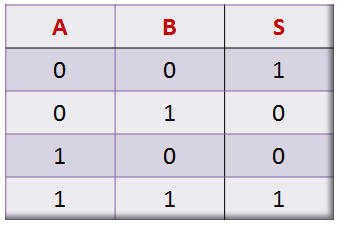

About me
Me chamo José Eduardo de Vargas de Souza. Tenho 18 anos e sou estudante da área de tecnologia.
Estou no primeiro semestre do curso de Análise e Desenvolvimento de Sistemas na Ulbra Torres (RS, Brasil).
Desenvolvo projetos desktop em Python e sites estáticos com HTML, CSS e JavaScript.


Portfólio
Conheça alguns dos meus projetos hospedados no Github
Hunger games gui
"Jogo" desktop que simula personagens definidos pelo usuário na história do Hunger Games (Jogos Vorazes).
O projeto usa interface gráfica usando a biblioteca tkinter, ou seja, o projeto é feito inteiramente em Python.
Leitor de tabela verdade
Programa que lê expressões de tabela verdade, retornando colunas e resultados de comparações.
Estou desenvolvendo esse projeto em python sem GUI, como parte dos meus estudos.
Estou desenvolvendo outros projetos, colocarei eles aqui em breve!